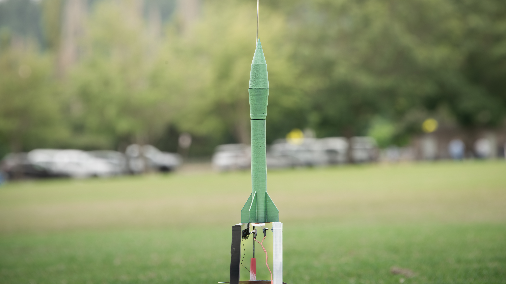

Fig. 1 — Honest John finished build
Flown
Saturn V
The first US surface-to-surface rocket that was capable of a nuclear payload.
- Scale
- 1:100
Alongside my own designs, I also enjoy building scale replicas of historically important rockets — either to explore a famous design or to experiment with a conceptual one.

Fig. 1 — Honest John finished build
The first US surface-to-surface rocket that was capable of a nuclear payload.

Fig. 2 — landing legs deployed
Replica of the Falcon 9 first stage, including deployable grid fins and landing legs, built to match the booster's return-to-pad configuration.

Fig. 3 — nose cone detail
An early build — a flying replica of the V-2, one of the first times I tried matching an external profile exactly rather than designing my own airframe.